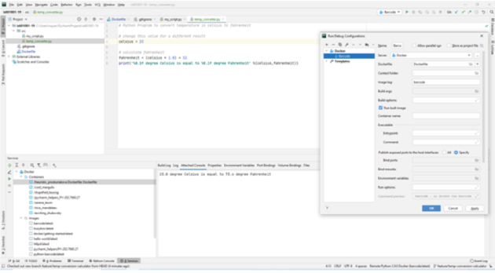
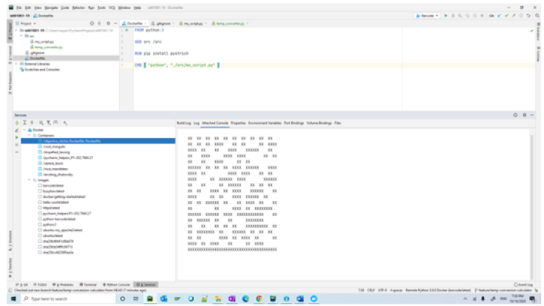

PyCharm is an Integrated Development Environment (IDE) used in computer programming, specifically for the Python language. It is developed by the Czech company JetBrains. It provides code analysis, a graphical debugger, an integrated unit tester, integration with version control systems (VCSes), and supports web development with Django as well as data science with Anaconda. PyCharm is cross-platform, with Windows, macOS and Linux versions. The Community Edition is released under the Apache License, and there is also Professional Edition with extra features – released under a proprietary license.
Getting started guide
1. Creating the python script
Open PyCharm and create a folder named ‘src’ Create a file under ‘src’ folder named my_script.py and add the below lines
# Sample taken from pyStrich GitHub repository
# https://github.com/mmulqueen/pyStrich
from pystrich.datamatrix import DataMatrixEncoder
encoder = DataMatrixEncoder('This is a DataMatrix.')
encoder.save('./datamatrix_test.png')
print(encoder.get_ascii())
2. Creating a blueprint for docker image with python interpreter
Create a file 'Dockerfile' (without extension) under 'src' folder and add the below lines
FROM python:3
ADD src /src
RUN pip install pystrich
CMD [ "python", "./src/my_script.py" ]
3. Setting up Docker container as runtime

4. Executing the python script on Docker
We will now create a run configuration in PyCharm to execute the python script we created, using the python interpreter running on a Docker image instead of using a local interpreter.

Congratulations! You have successfully created and executed your first python program on Docker using Pycharm.
For tutorial follow ->
Integrating docker git python with pycharm